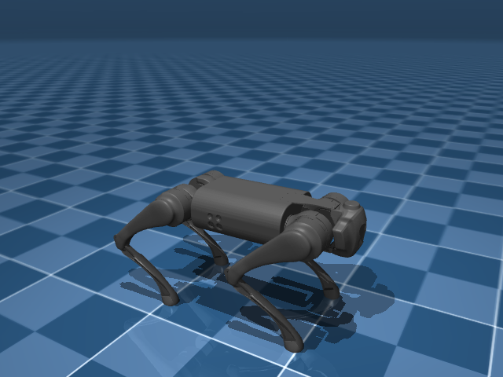
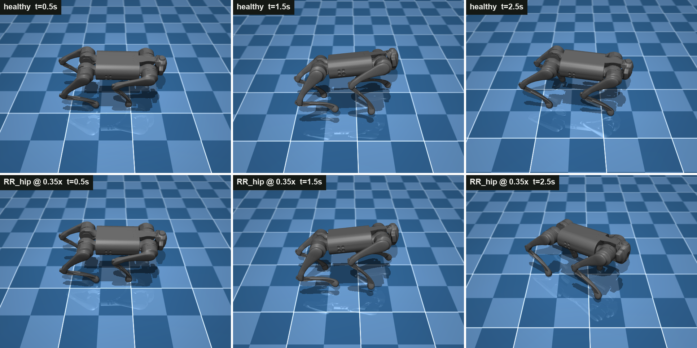
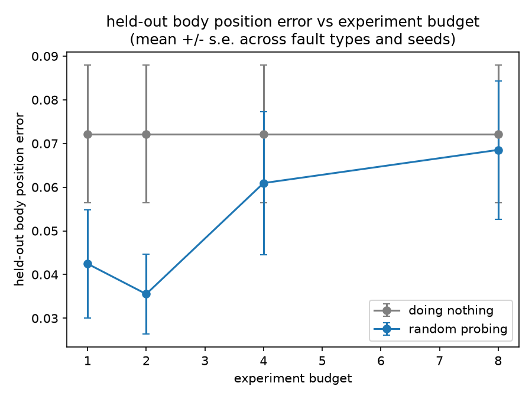
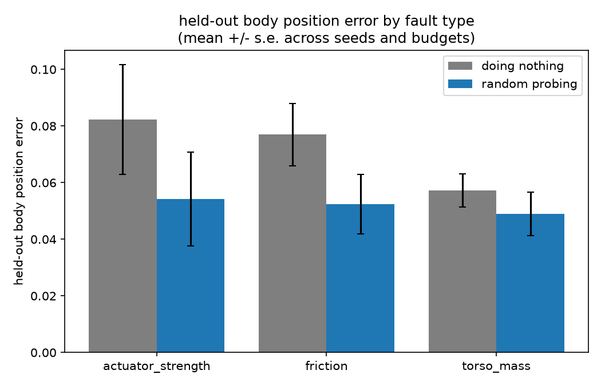
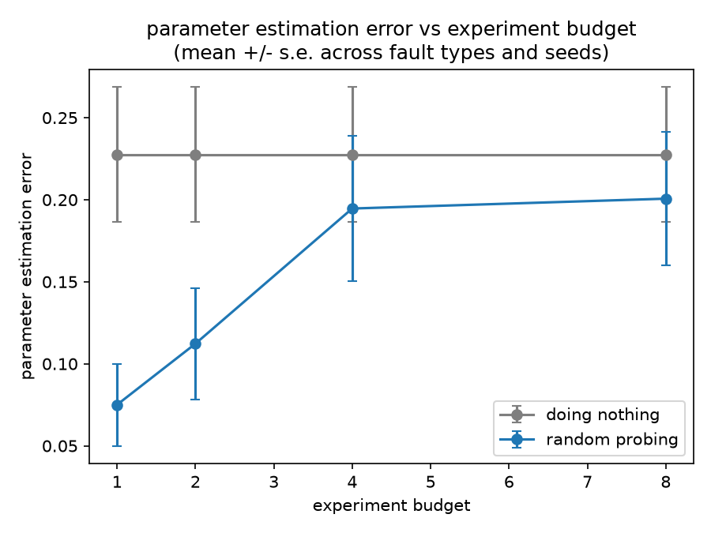

Can an AI agent figure out what physically changed on a robot, just by running its own experiments, better than doing nothing and better than testing at random?

Real machines drift over time: a motor weakens, a surface gets slicker, weight shifts. Nobody tells the robot what changed, it has to notice on its own. The usual fix is a person running diagnostic tests by hand. I wanted to test whether an AI agent can do this itself: design its own tests, read the results, and figure out the cause.
I used a standard, off-the-shelf simulator, walking controller, and curve-fitting baseline instead of building any of these myself. The only new part is the diagnosis step: can an agent figure out the fault better than the alternatives?
One round, an episode, works like this. The agent only ever sees the first box below, everything in the middle is invisible to it. I kept the fault itself as simple as possible: exactly one physical property changes per episode, never more than one, and the agent gets a small, fixed budget of 8 experiments to figure out which.
It's walking normally. This is all the agent gets told about.
I secretly change exactly one thing: grip, weight, or one leg motor's strength.
It writes and runs its own test movements, up to 8 times.
It submits an estimate, for example that the left leg is at 80% strength.
I test the estimate against new movements it never saw during testing.

Everything in the picture above is invisible to it. It never sees an image, a video, or a 3D scene, only four functions and whatever numbers they return:
inspect_model(): static facts about the healthy robot, like joint names, movement limits, and its standing pose. It's free to call.run_experiment(code, duration): the agent writes control code and runs it on the real, possibly broken robot. This costs 1 of its 8 tries.inspect_trajectory(id): a numeric summary of a past run, like body position over time, per-joint tracking error and force, and which feet touched the ground. It's free, so the agent can call it as many times as it wants.submit_model(estimate): the agent's final answer. This ends the episode.
Concretely, run_experiment takes actual Python. Here is a simple test the agent could write,
swinging one leg and holding the rest still:
# leg motors are ordered [hip, thigh, calf] x [FR, FL, RR, RL] def policy(t, obs): ctrl = np.array([0.0, 0.9, -1.8] * 4) ctrl[1] += 0.25 * np.sin(2 * np.pi * 0.8 * t) # swing FR_thigh only return ctrl
Here is what inspect_trajectory returned after one real run against a robot with a weakened rear hip motor. No labels, no hint anything is wrong, just numbers:
{
"n_steps": 150,
"torso_displacement_xyz": [0.061, 0.030, 0.007],
"torso_min_height": 0.252,
"torso_max_height": 0.306,
"per_actuator": {
"RR_hip": { "mean_tracking_error": -0.004, "max_abs_tracking_error": 0.073 },
"FR_thigh": { "mean_tracking_error": 0.041, "max_abs_tracking_error": 0.244 },
"RL_calf": { "mean_tracking_error": -0.073, "max_abs_tracking_error": 0.285 }
/* ... 9 more joints ... */
},
"foot_contact_fraction": { "FR": 0.65, "FL": 0.60, "RR": 0.60, "RL": 0.76 }
}
Identifying that a specific rear hip motor is 18% weak from tables like this, using 8 tries or fewer, is the task.
I run each one through the same steps 2 through 4:
I tested 60 baseline configurations, ran 5 real episodes with the coding agent, and along the way found and fixed one real bug in the curve-fitting baseline.
60 test runs: 3 kinds of fault × 5 random severities × 4 testing budgets (1, 2, 4, or 8 experiments). Random probing beats doing nothing on average for every fault type, though the margin is modest and does not improve steadily as the test budget grows (Figure 1).


Optimizer bug. The first full run of this sweep showed parameter error getting worse as the test budget increased from 1 to 8 experiments, backwards from what more data should do. The cause was not random probing itself: the curve-fitter's starting guess for leg-motor strength sat exactly on the edge of its allowed range, a known weak point for this type of optimizer, and it was stopping after a handful of tries without raising an error.
I fixed the default the simple way: moving the starting guess slightly off the edge, which is almost free and resolves most of it. Before the fix, 8 tests scored worse than doing nothing. After, 8 tests beat doing nothing. I also tried a more thorough fix, restarting the fit from several different points instead of one, which gets much closer (one config went from parameter error 0.24 to 0.0015) but costs 30 to 90 minutes per fit since it means re-running the simulation many more times. I kept that as a separate, slower check rather than the default.

The same test, run five times with the coding agent in place of random probing. In every run it had 8 tests to find one hidden leg-motor fault. Its own submitted answers explain the pattern in the results:
| Fault (true strength) | Agent's guess | Also guessed | Result | Outcome |
|---|---|---|---|---|
| Rear-right hip motor true 0.818 |
0.80 | nothing extra | beat both baselines | Win |
| Front-right calf motor true 0.788 |
0.80 | nothing extra | 0.0052 vs 0.131 / 0.102 | Win |
| Front-right thigh motor true 0.944, barely broken |
0.94 | nothing extra | 0.065 vs 0.056 / 0.054 | Tie |
| Rear-right thigh motor true 0.887 |
~right | grip 1.5×, weight 1.3× (both wrong) | 0.250 vs 0.071 / 0.071 | Loss |
| Front-right calf motor true 0.712 |
0.71 | grip 0.64×, weight 2.25× (both wrong) | 0.236 vs 0.157 / 0.157 | Loss |
In the three runs where the agent left grip and weight unset, since it had not actually tested them, it either won outright or tied a case where doing nothing was already close to optimal. In the two runs where it also submitted a guess for grip or weight, that guess was wrong both times, and was enough on its own to make the result worse than doing nothing, even though its leg-motor estimate in those same two runs was the most accurate in the whole study (parameter error 0.0018 and 0.0044, better than either baseline). The agent's diagnosis of the actual fault was consistently good across all five runs. The failure was submitting confident values for parameters it had no evidence about.